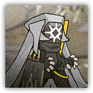

深池引火者 Dublinn Flamecaller
远程 法术；普通 类人（任意）
 |
深池中擅长操纵火焰的术师。燃烧自己身边的一切，甚至自己的死亡。 |
深池引火者丨Dublinn Flamecaller
中型类人（任意），守序中立
| AC 13 | 先攻 +1（11） |
| HP 52（8d8+16） | |
| 速度 25尺 | |
| 调整 | 豁免 | 调整 | 豁免 | 调整 | 豁免 | ||||||||
|---|---|---|---|---|---|---|---|---|---|---|---|---|---|
| 力量 | 8 | -1 | -1 | 敏捷 | 12 | +1 | +1 | 体质 | 14 | +2 | +2 | ||
| 智力 | 11 | +0 | +0 | 感知 | 12 | +1 | +1 | 魅力 | 16 | +3 | +3 |
| 抗性 火焰 |
| 感官 被动察觉11 |
| 语言 通用语，维多利亚语，塔拉语 |
| CR 2（XP 450；PB +2） |
特质 Traits
点燃咒术 Igniting Hex。 引火者使用引火术球发动的攻击命中物件时，其命中均为重击命中。引火者可以随意点燃任何触及内未被着装或携带的可燃物件，或者任何自愿生物。
焚毁余烬 Death Burst。引火者在死亡时爆炸。敏捷豁免：DC13，源自引火者的10尺光环区域内的每名生物。失败：14（4d6）火焰伤害。成功：半伤。
动作 Actions
引火术球 Flame Orb。近战或远程攻击检定：+5，射程90尺。命中：14（2d10+3）火焰伤害。重击：目标开始燃烧。
深池引火者队长 Dublinn Flamecaller Captain
远程 法术；普通 类人（任意）
极其擅长操纵火焰的精锐术师。燃烧自己身边的一切，甚至自己的死亡。 |
深池引火者队长丨Flamecaller Captain
中型类人（任意），守序中立
| AC 14 | 先攻 +1（11） |
| HP 78（12d8+24） | |
| 速度 25尺 | |
| 调整 | 豁免 | 调整 | 豁免 | 调整 | 豁免 | ||||||||
|---|---|---|---|---|---|---|---|---|---|---|---|---|---|
| 力量 | 8 | -1 | -1 | 敏捷 | 12 | +1 | +1 | 体质 | 14 | +2 | +2 | ||
| 智力 | 12 | +1 | +1 | 感知 | 13 | +1 | +3 | 魅力 | 17 | +3 | +5 |
| 抗性 火焰 |
| 感官 被动察觉11 |
| 语言 通用语，维多利亚语，塔拉语 |
| CR 4（XP 1,100；PB +2） |
特质 Traits
点燃咒术 Igniting Hex。 引火者使用引火术球发动的攻击命中物件时，其命中均为重击命中。引火者可以随意点燃任何触及内未被着装或携带的可燃物件，或者任何自愿生物。
焚毁余烬 Death Burst。引火者在死亡时爆炸。敏捷豁免：DC13，源自引火者的10尺光环区域内的每名生物。失败：21（6d6）火焰伤害。成功：半伤。
动作 Actions
多重攻击 Multiattack。深池引火者队长进行两次引火术球攻击。
引火术球 Flame Orb。近战或远程攻击检定：+5，射程120尺。命中：14（2d10+3）火焰伤害。重击：目标开始燃烧。